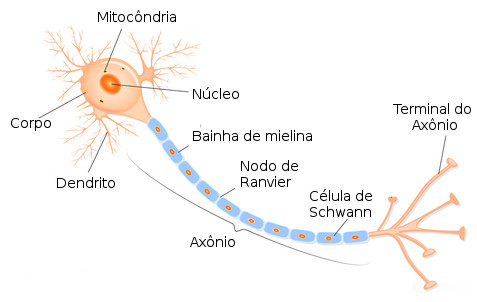
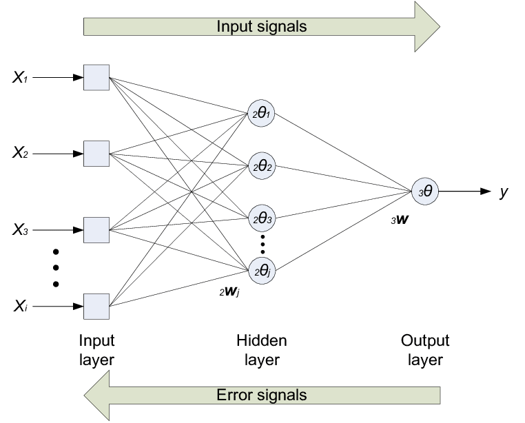

Capítulo 5 Multivariada
5.1 Redes Neurais Artificiais
Redes neurais artificiais é um método baseado na estrutura de funcionamento dos neurônios do cérebro humano. A arquitetura do método é semelhante a todo o processo que ocorre com os neurônios, quanto a forma de aprendizado e repasse de informação entre neurônios através dos dendritos. A estrutura básica de um neurônio biológico é composto por três seções: o corpo da célula, os dendritos e o axônio. A figura 2.1 é uma ilustração da estrutura de um neurônio biológico

A partir de inúmeros estudos na área, um modelo em particular baseado em neurônio biológico foi proposto por Warren S. McCulloch e Walter Pitts no ano de 1943 em um artigo chamado: “A logical calculus of the ideas immanent in nervous activit”, que é uma simplificação do que se sabia até então sobre o neurônio biológico, este modelo foi chamado de MCP.
5.1.1 Modelo MCP
A representação matemática do modelo MCP contém \(n\) terminais \(x_1, x_2, ..., x_n\) (representando os dendritos) e um \(y\) (axônio) representando o terminal de saída. Para simular o comportamento das sinapses, os terminais de entrada do neurônio tem pesos \(W_1, W_2, ..., W_n\) associados cujo os valores podem ser positivos ou negativos.
No modelo MCP a ativação de um neurônio é obtida através de uma função de ativação, que ativa ou não a saída, dependendo do valor da soma ponderada das suas entradas (Braga, 2007). O modelo terá a saída ativada quando
\[ \begin{eqnarray} \sum_{i=1}^{n}x_i W_i \geq \theta, \end{eqnarray} \] em que \(n\) é o número de entradas, \(W_i\) é o peso associado a entrada \(x_i\), e \(\theta\) (threshold) é o limiar do neurônio. A figura 2.2 ilustra o processo do modelo MCP de um neurônio artificial

5.1.2 Funções de ativação
Após McCulloch e Pitts terem proposto um modelo, derivou-se outros modelos que permitem a saída não apenas zero ou um, mas diferentes valores para y. Esse processamento se dá pelo que chamamos função de ativação (Braga, 2007). Será exemplificado três tipos de função de ativação :
- Função Linear, definida como:
\[ \begin{eqnarray} \hat{y} = \alpha x, \end{eqnarray} \]
no qual \(\hat{y}\) é a saída do modelo, \(x\) os valores de entrada e \(\alpha\) uma constante de linearidade. No qual o máximo que y pode assumir é \(\gamma\) e mínimo -\(\gamma\)
- Função Degrau, definida como
\[ \hat{y} = \begin{cases} -\gamma \hbox{, se x $\leq$ - $\gamma$} \\ \gamma,\hbox{ se x $\geq$ $\gamma$} \end{cases} \]
- Função Logística, definida como
\[ \begin{eqnarray} \hat{y} = \frac{1}{1 + \epsilon^{x/T}}, \end{eqnarray} \] onde \(T\) determina a suavidade da curva, que será utilizada como função de ligação no modelo proposto.
5.1.3 Erro e Atualização dos pesos no MCP
Quando se estima um parâmetro, é esperado que o mesmo apresente algum desvio em torno do valor real. Com o objetivo de minimizar a diferença entre eles, o algorítimo de aprendizado do perceptron dispõe de regras que permite a adaptação dos seus pesos de forma que a rede execute uma determinada tarefa de classificação.
O algoritmo consiste em atualizar os pesos de modo que estejam mais próximos da solução desejada que os anteriores. A atualização do peso é dada por \[ \begin{eqnarray} W(t+1) = W(t) + \Delta W, \end{eqnarray} \]
em que \(W(t)\) é o peso no instante \(t\) e \(\Delta W= \eta x\) o incremento associado ao peso, sendo \(\eta\) a taxa de aprendizado.
Vamos denotar \(x\) o vetor de entrada, \(y\) o vetor da saída desejada, e {x,\(y\)} o nodo arbitrário da rede. A atual saída da rede será chamada de \(\hat{y}\), ou seja, uma estimação do valores ideais, mas com um determinado erro \(\epsilon\). Dessa forma podemos denotar o erro como \[ \begin{eqnarray} \epsilon = y - \hat{y}. \end{eqnarray} \]
Para o caso perceptron, \(y\) \(\in\) \(\{0,1\}\) e \(\hat{y}\) \(\in\) {0,1}. Dessa forma existem quatro possíveis soluções para \(\epsilon\). Se \(\epsilon = 0\) então encontramos valores estimados ideais. Caso contrario \(\epsilon\) pode assumir valores \(\{-1,1\}\). Se \(\epsilon =-1\) implica que \(y = 0\) e $ = 1$, mas se \(\epsilon =1\) então \(y = 1\) e \(\hat{y} = 0\). Com o valor de \(\epsilon\) podemos ter uma ideia quanto a direção com que os valores estimados estão distante dos valores ideias (Braga, 2007).
Feito isso, sabemos que \(\Delta W\)=\(\eta x\) e \(w(t + 1) = w(t) + \epsilon \eta x\). Quando \(\epsilon = 1\) a equação de atualização dos pesos possui a forma \(W(t+1)= w(t) + \eta x\). Mas para \(\epsilon = -1\) temos a equação \(W(t+1)= w(t) - \eta x\).
5.1.4 Multilayer Perceptron (MLP)
O MLP é uma rede neural semelhante ao perceptron, mas com duas ou mais camadas de neurônios, sendo essas camadas ligadas entre si por sinapses com pesos. O aprendizado deste tipo de rede é feito geralmente pelo algoritmo back-propagation (retro-propagação do erro), porém existem outros algoritmos para serem usados com a mesma finalidade. A figura 2.3 ilustra a estrutura do modelo MLP quanto as entradas (inputs), camadas e a resposta obtida

De forma simplificada a estrutura matemática do modelo é semelhante a do modelo perceptron sendo apenas adicionadas mais camadas de neurônios. A ativação via função de ativação é geralmente feita com a função sigmoidal comumente chamada de função logística (Braga, 2007).
5.1.5 Algoritmo back-propagation
O algoritmo back-propagation é um algoritmo supervisionado que utiliza pares como entrada e saída desejada para por meio de um mecanismo de correção de erros atualizar os pesos. O treinamento tem duas fases chamadas de forward e backward, sendo que o algoritmo percorre a rede em um sentido para cada fase. A fase farward define a saida de rede para uma dada entrada inserida no modelo e a fase backward utiliza a saida fornecida e a saida desejada para atualizar os pesos de sua conexões visando a diminuição do erro (Haykin, 2007). A figura 2.4 ilustra o processo do algoritmo

O algoritmo back-propagation é baseado na regra delta, sendo chamado também de regra delta generalizada. Os ajustes dos pesos são feitos utilizando-se o método gradiente. A função de custo a ser minimizada é dada pela soma dos erros quadráticos \[ \begin{eqnarray} E = \frac{1}{2}\sum_{p}\sum_{i=1}^{k}(y_{i}^{p}-\hat{y}_{i}^{p}), \end{eqnarray} \]
em que \(p\) é o número de padrões, \(k\) é o número de unidades de saída, \(y_{i}\) é a i-ésima saída desejada e \(\hat{y}_{i}\) é a i-ésima saída da rede.
5.2 Análise de Componentes Principais
A análise de componentes principais é uma técnica estatística multivariada que consiste na diminuição da quantidade de variáveis em componentes que a partir delas podemos explicar uma determinada proporção da variabilidade total dos dados utilizando apenas as componentes que são essencialmente em menor número que as variáveis.
Seja \(a_{ik}\) autovetor correspondente a i-ésima componente principal e a uma variável \(k\). Logo, a n-ésima componente principal para uma observação da amostra \(j\), denominada por \(c_{n}^{j}\) definida por: \[c_{n}^{j}=\sum_{l=1}^{k}a_{nl}x_{l}^{j},\] onde, \(x_{l}^{j}\) representa o valor da l-ésima variável para uma observação j da amostra.
Para o estudo em questão, os bancos de dados observados foram os do ano de 2014 e 2006 fornecidos pela cliente. Podemos representar matricialmente cada um dos bancos de dados na seguinte forma:
\[ \textbf{X}= \begin{bmatrix} x_{11} & x_{12} & x_{13} & \dots & x_{1n} \\ x_{21} & x_{22} & x_{23} & \dots & x_{2n} \\ \vdots & \vdots & \vdots & \ddots & \vdots \\ x_{d1} & x_{d2} & x_{d3} & \dots & x_{dn} \end{bmatrix} \]
onde, \(n\) é o número de variáveis associadas ao estudo sendo as colunas do nosso banco de dados, e \(d\) é a quantidade de observações em cada variável sendo o número de linhas do banco de dados. Com base na matriz de correlação fornecida podemos obter o vetor de autovalores e seus respectivos autovetores.
O vetor de autovalores pode ser representado da seguinte forma:
\[ \boldsymbol{\lambda}= \begin{bmatrix} \lambda_{1;1} \\ \lambda_{2;1}\\ \vdots \\ \lambda_{p;1} \end{bmatrix} \]
Cada autovalor possui um autovetor que é associado a quantidade de variáveis observadas originalmente (número de colunas). Dessa forma, temos \(p\) (quantidade de componentes) autovetores cada um com \(n\) (quantidade de variáveis) observações, ou seja, \(n\) linhas. Os autovetores podem ser representados matricialmente da seguinte forma:
\[ \textbf{A}_1= \begin{bmatrix} a_{1;1} \\ a_{2;1}\\ \vdots \\ a_{n;1} \end{bmatrix} \] \[ \textbf{A}_2= \begin{bmatrix} a_{1;1} \\ a_{2;1}\\ \vdots \\ a_{n;1} \end{bmatrix} \] \[ \textbf{A}_{p}= \begin{bmatrix} a_{1;1} \\ a_{2;1}\\ \vdots \\ a_{n;1} \end{bmatrix} .\]
Conforme definido anteriormente, o cálculo da n-ésima componente principal para uma observação da amostra j, denominada por \(c_{n}^{j}\) é definida por:
\[c_{n}^{j}=\sum_{l=1}^{17}a_{nl}x_{l}^{j}.\]
Para facilitar o entendimento, a matriz com todas as componentes principais pode ser representada da seguinte forma:
\[ \textbf{C}= \begin{bmatrix} C_{1}^{1} & C_{2}^{1} & \dots & C_{p}^{1} \\ C_{1}^{2} & C_{2}^{2} & \dots & C_{p}^{2} \\ \vdots & \vdots & \ddots & \vdots \\ C_{1}^{d} & C_{2}^{d} & \dots & C_{p}^{d}\\ \end{bmatrix} .\] O índice de capital social para cada observação \(j\), denominado por \(ICS_j\), é dado por:
\[ICS_j=\frac{1}{\sum_{k=1}^{p}\lambda_k}\sum_{k=1}^{p}\lambda_k c_{k}^{j},\] em que \(\lambda_k\) representa o autovalor associado à k-ésima componente principal, sendo \(p\) o número de componentes principais utilizadas na construção do índice (quantidade definida a partir da variabilidade miníma explicada aceitável).
O vetor com todos os índices são dados na forma:
\[ \textbf{I}= \begin{bmatrix} ICS_{1;1} \\ ICS_{2;1}\\ \vdots \\ ICS_{j;1}\\ \vdots\\ ICS_{d;1} \end{bmatrix} ,\]
sendo \(d\) o número de observações.